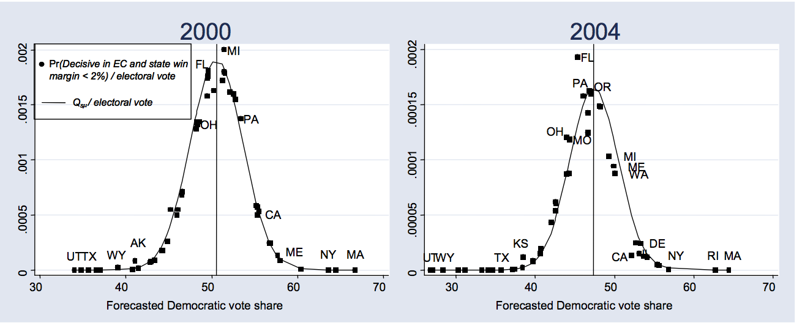

Campaign Expenditure and State Competitiveness
 Quinn Herrera & David Deng
Quinn Herrera & David Deng

Introduction
The 2016 Presidential Cycle is well under way, with Donald Trump recently becoming the presumptive Republican candidate and Hillary Clinton the most likely Democratic candidate. Like many presdiential elections before this, there is a significant attention paid to "swing states", a term to describe states in which that is no overwhelming support for a particular party. (i.e. Ohio, in which the last three presidential elections were decided by a margin smaller than 5 percentage points)
There has been some literature on the signficiance of swing states.
Ma & McLaren(2016)
shows that under the American electoral system, the welfare of citizens in swing states is maximized.
Gelman, Silver and Aaron (2009)
concludes that the probability that an individual's vote would matter is much much greater in swing states.
Strömberg(2008) illustrates in the graph below the relationship between resource allocation per electoral vote as a function of forecasted Democratic vote shares, and demonstrates that states with forecasted vote share closer to 50% (i.e. swing states) are allocated with more resources.

We are interested in the patterns of campaign expenditure in relation to "swing state". In particular, we will investigate these two main questions:
1. What are the geographic patterns of presidential campaign expenditure?
2. How does the preceived competitiveness in a state and the number of electoral votes correlate with candidate's expenditure on a state?
Data Sets
1. The Federal Election Commision(FEC) website provides a comprehensive dataset on all of the expenditures made by Presidential candidates in 2008, 2012 and 2016 cycle. Information include the amount of expenditure, date of expenditure and the origin of expenditure. We limited the dataset to include only dates after general elections began, in order to account for differences in primary expenditures due to incumbent president in 2012. We also cleaned the data slightly, for example excluding Obama's >$1 million expenditures on media and consulting companies2. The 270ToWin website provides the election results for each state, broken down to the percentage vote for each party. The data, however, has to be manually scraped – no good datasets for election results were found.
3. (No Longer Used) We began our report with exploring the relationship between Prediction Market and Contribution data, and whether an upset would affect the amount of contributions. However, no meaningful relationship was found between the two variables, and the data itself was difficult to deal with. The prediction market data on primaries only give odds on whether a candidate will win the whole state, but gives no information on the percentage of votes a candidate is expected to win. Hence, it is not a good instrument on estimating "upset". Lots of efforts were spent scraping data from Predictwise and Pollyvote, and thus we present these data sets without further analysis.
2012 Pollyvote Odds by Party
2016 Pollyvote Odds by Party
2016 Predictwise Odds by Primary in Each State
Patterns of Presidential Campaign Expenditure
We first looked at the expenditure pattern in President Obama's 2008 reelection campaign.Visualization of Obama 2008 Campaign's Expenditure Pattern in General Election
| $0 - $7,800,000 | $7,800,000 - $15,600,000 | $15,600,000 - $26,100,000 |
Interested in seeing one more interactive graph? Click here to see more!
Several interesting patterns can be seen on this map. It should be noted that Illinois, Wisconsin and Missouri were all considered swing states in the 2008 election campaign, and most of the campaign's expenditure went to those states. Also, candidates do not necessarily spend more money on states that have higher electoral votes. For example, Obama only spent ~$1.8 million on Texas, despite having 28 electoral votes, probably because it is highly likely to vote Republican no matter what. Similarly, Obama campaign team did not spend much on states that are traditionally Democratic, like RI, Maine and Vermont.
Economic Model
In order to predict how much a campaign spends in a given state, we need to find variables that are unaffected by the amount of money spent in a given state. One variable we used was the number of electoral college votes a state has to offer. The number of votes is proportional to the population in that state, and is independent of the campaign expenditure. Furthermore, candidates are incentivized to win a state with more electoral votes.Another explanatory variable we decided to use was the competitiveness between the Democratic and Republican Pary's vote per state in the previous election cycle. This historical cannot be changed either and could potentially play a role on campaign expenditure. A candidate may spend less money on a state where historically one party has a significant advantage over the other. On the other side of the spectrum where the spread is small, a candidate may decide to spend more time and resources where a clear winner may not be as obvious. It may be in the candidate’s favor to spend the extra money to give the campaign the edge it needs to win that state. The relationship described can be modeled by the graph above, where y= 1/|x|. X is the absolute difference between voting percentages in each state, and y is our measure of competitiveness. It should be noted that this graph is fairly similar to the Strömberg's graph in our literature review.
Our model:
- expenditurei is the amount of expenditure spent in statei
- electoralVotesi is the amount of electoral votes statei carries
- competitivenessi is the reciprocal of the absolute difference between voting margin in statei in the last election
Results
We used the aggregate expenditure data per state for 2008 & 2012 Presidential cycle during the general election, and ran an OLS regression according to the model we presented. The results are presented here:Regression including expenditure from both Democrats and Republicans in 2008 and 2012
Regression using only Republicans expenditures in 2008 and 2012
Regression using only Democrats expenditures in 2008 and 2012
Conclusion
Found a positive B2 estimator, which suggests there are higher campaign expenditure in states that were competitive in the last election. Also found a positive B1 estimator, which suggests that candidates tend to spend more money on states that have a higher electoral votes, which makes intuitive sense.References
Gelman, A., Silver, N., & Edlin, A. (2009). What is the probability your vote will make a difference? National Bureau of Economic Research. Retrieved from http://www.stat.columbia.edu/~gelman/research/published/probdecisive2.pdfMcLauren, J., & Ma, X. (2016). A Swing-State Theorem, with Evidence. Retrieved from http://economics.yale.edu/sites/default/files/ma_mclaren_swing_state_04-16.pdf
Strömberg, D. (n.d.). How the Electoral College Influences Campaigns and Policy: The Probability of Being Florida. Forthcoming American Economic Review. Retrieved June, 2008, from http://perseus.iies.su.se/~dstro/ElectoralCollege.pdf